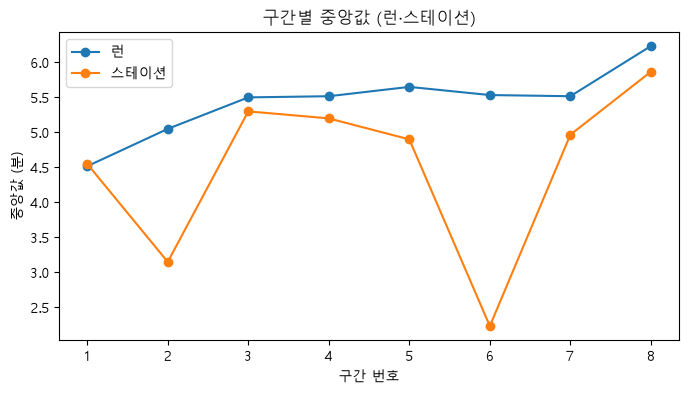
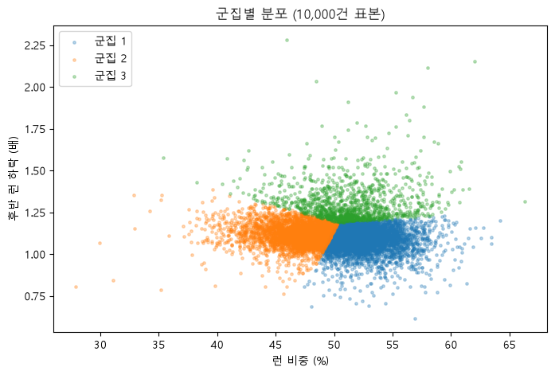
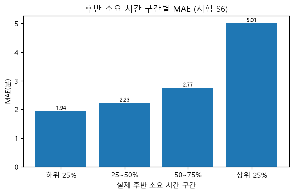
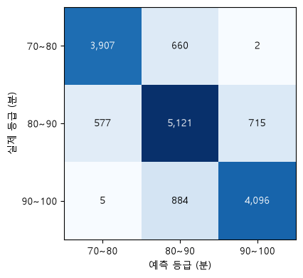

Kaggle 대회 기록
92,374건 · 시즌 S4-S6
완주 시간 분포와
구간별 기록 구조 파악
싱글 부문 59,886건
중복 · 이상치 제외
hyrox_results.xlsxhyrox_results.csvhyrox_clean.csvimages/시즌 S4-S6
전체 부문
오픈 · 프로 싱글
더블 · 릴레이 제외
모든 열이 같은 기록
-1,783건
구간 기록 0초
-125건
중앙값 5배 이상 구간
-38건
시즌 분할 기반 후보 모델 비교
학습 · 검증 시즌 교차 비교
회귀: 선형, 릿지, 랜덤 포레스트
분류: 로지스틱 회귀, 랜덤 포레스트
선택 모델과 베이스라인
동일 데이터로 비교